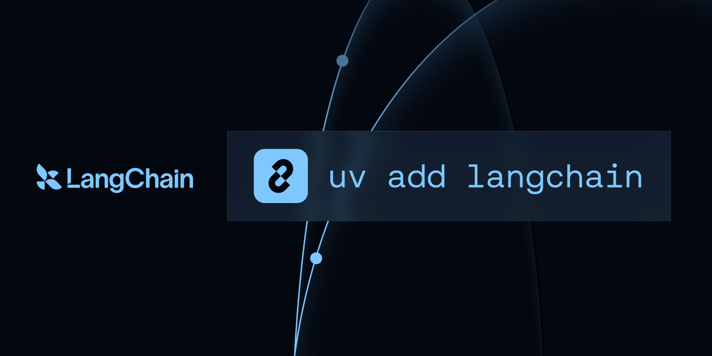
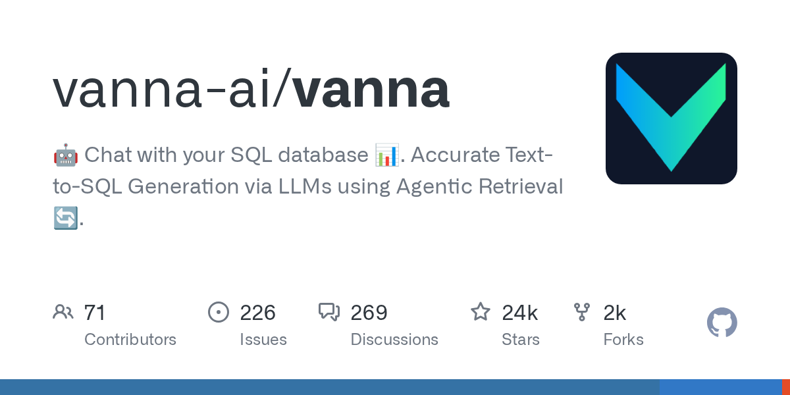
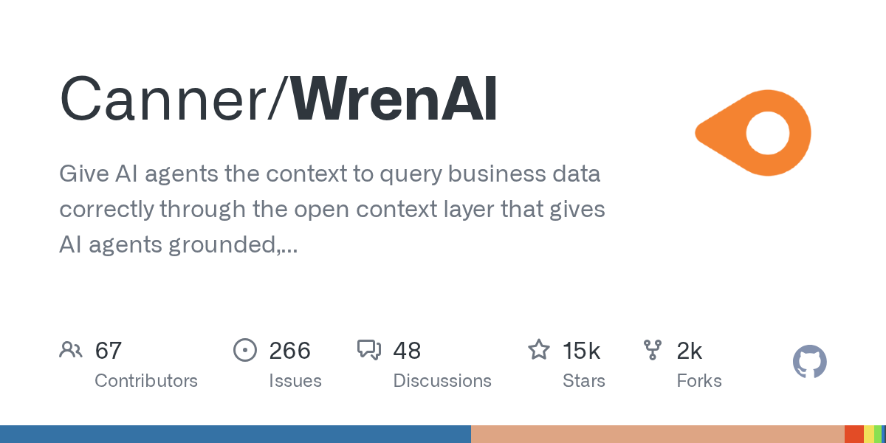

Schema Grounding is a Stack
Five layered interventions — linking, representation, retrieval, validation, semantic layer — each catching a failure mode the one before it misses. Build in order.
Pipeline overview
Linking & Selection
Align the question to the tables and columns it actually needs.
Representation
Serialize selected schema so the model reads types, keys, and values correctly.
Retrieval & Pruning
Fit large schemas via embedding retrieval and dynamic pruning.
Validation & Repair
Execute, capture errors, loop until the database accepts the query.
Semantic Layer
Define business metrics and domain rules once, outside the prompt.
Layer details
L1
Schema Linking & Selection
Schema Linking & Selection
Techniques
- RAT-SQL — n-gram string matching, subsequence partial match, relation-aware encoder [1]
- Neural alignment — deep models learn question↔schema attention [4]
- LLM in-context selection — LLM picks relevant subset before generation [4]
- CRUSH4SQL — hallucinate minimal schema, dense-retrieve real match; scales to 17,844 elements [3]
- Bidirectional retrieval — table-first ∪ column-first to balance recall/FPR [2]
Recall vs. false-positive tradeoff
L2
Schema Representation
Schema Representation
Formats ranked
- M-Schema — name, type, description, PK flag, sample values per column; special tokens for DB/table/FK [8]
- Code Representation (DDL) —
CREATE TABLEwith types, PK, FK; preferred in DAIL-SQL study [6] - OpenAI Demonstration — second-best in zero-shot evaluation [6]
- Sample rows per table — reveals actual values and semantics; truncate long strings [12]
- External knowledge / evidence — domain rules the schema can't express [10]
Evidence impact
L3
Retrieval & Pruning at Scale
Retrieval & Pruning at Scale
Systems
- LitE-SQL — per-column embeddings in ChromaDB, top-25 retrieval, ~25s vs CHESS 84s, 72.1% BIRD [16]
- CHESS — LSH + vector DB for value/catalog search, adaptive pruning (column filter → table select → final select) [5]
- CRED-SQL — K-means column clustering, inverse-cluster-size weighting; recall 0.09 → 0.40 @1 [15]
- LinkAlign — multi-DB routing: query rewrite → argmax LLM → multi-agent; 33.09% Spider 2.0-Lite [14]
- Hierarchical clustering RAG — dynamic schema sizing vs brittle fixed-k [18]
L4
Validation, Execution Feedback & Self-Correction
Validation, Execution Feedback & Self-Correction
Mechanisms (stack these)
- PICARD — grammar decoding: incremental SQL parser rejects invalid tokens during generation; T5-3B 74.4%→79.3% EX [20]
- Execution-guided decoding — conditions on partial execution, prunes error-ing candidates; 83.8% WikiSQL [25]
- MAC-SQL Refiner — execute → capture error → re-prompt to fix; 59.59% BIRD test, 86.75% Spider dev [23]
- DIN-SQL self-correction +1.73 pts; MAGIC auto-derives guideline from failure analysis → 85.66% [22]
- CSC-SQL voting — merge-revises top-2 sampled SQLs; 73.67% BIRD private test (32B) [24]
L5
Semantic Layer
Semantic Layer
What it fixes
- Raw schemas lack business process definitions, metric handling, synonym resolution [39]
- Define "total sales," dimensions, and filters once; reuse rather than re-infer per query [34]
- BIRD's hand-crafted evidence approximates a semantic layer, but can't scale — this does [11]
- OSI (Jan 2026) — vendor-neutral YAML standard, 40+ partners (Snowflake, dbt, Cube, Databricks) [42]
Warehouse-native tools
Grounding recipe
-
Small / medium DB + strong model
Feed the full schema. Skip explicit linking filters — they can hurt top models. Full-schema prompting reaches 94.62% EX. [29]
Open-source tools

NLSQLTableQueryEngine + ObjectIndex — retrieves only relevant tables to avoid context overflow. [37]


Agentic: schema tools + Context Store + dynamic golden Q/SQL retrieval via GetFewShotExamples. [35]
Benchmark landscape
| System | Benchmark | Score | Note |
|---|---|---|---|
| AskData + GPT-4o [10] | BIRD test | 81.95% | oracle evidence |
| Human baseline [10] | BIRD test | 92.96% | ceiling |
| CHASE-SQL [28] | BIRD test | 73.0% | oracle upper bound 82.79% |
| DAIL-SQL + GPT-4 [7] | Spider leaderboard | 86.6% | Code Representation prompt |
| DivSkill-SQL [13] | Spider 2.0-Lite | 73.13% | enterprise DBs (>1k cols) |
| GPT-4o [13] | Spider 2.0 | 10.1% | vs 86.6% on Spider 1.0 |
| Full-schema prompting [29] | Spider dev | 94.62% | strong model — linking hurts |